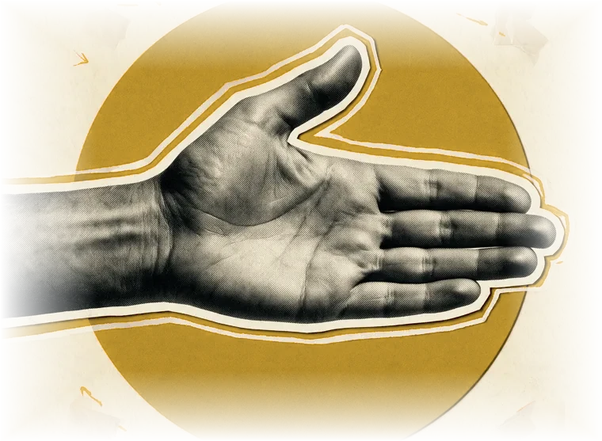

One lens, used on every problem.
The Human Latency is a think tank. We pick a problem, research it deeply, and follow it through every silo between what was intended and what actually happened. This page is the framework we use to do that.

Four steps, one lens.
Nothing is concluded before it is understood. The lens stays the same throughout: intent, system, friction, outcome, learning.
Observe
We start with the problem as it really happens and write down what we see: intent first, friction second.
Map
We trace every silo, rule, handover and person that sits between the intent and the outcome.
Test
We check what we found against the evidence, quote our sources exactly, and say plainly what is still unknown.
Share
We publish what we learn, so others can use the same lens on the problems in front of them.
Bring us a problem.
Nothing here is for sale. If you are working on a problem that sits between intent and outcome and want to think it through, reach out on LinkedIn.